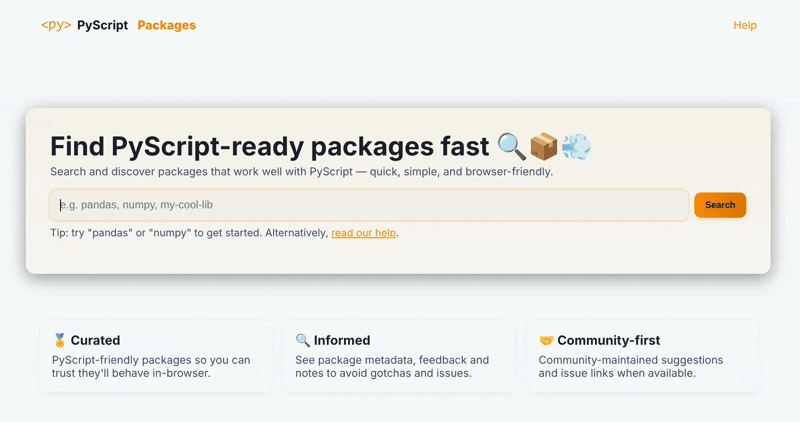
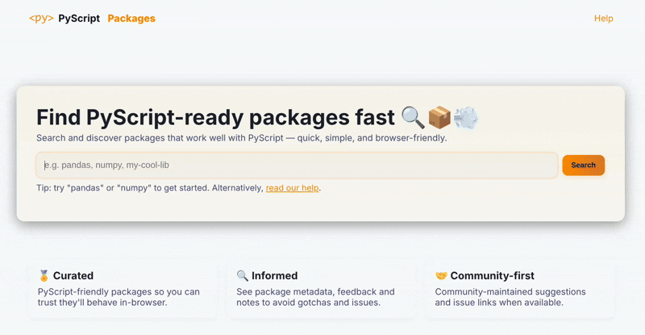

Help
Contents:
What is this?
This site provides information about PyScript packages.
Running Python in the context of a browser means certain assumptions made by packages running in traditional Python environments do not apply. This website aims to track and provide details about packages compatible with PyScript so developers can make informed decisions about which packages to use.
The information provided through this website is community contributed and curated: you can help improve the data!
For more information about PyScript itself, please visit the PyScript website.
How does it work?
On the front page, type in the name of the Python package you want to learn about and press Enter. You'll be taken to a page that indicates if the package is compatible with PyScript. This can be one of three states:
- ❌ Red - Not Supported
- ⚠️ Amber - Partial Support / Unknown
- ✅ Green - Supported
There may also be metadata to help you understand the package's compatibility and usage.
How do I contribute?
Contribute by reporting the status of packages you have tested with PyScript. This helps keep the information up-to-date and useful for everyone.
If a package is in the amber (partial support / unknown) state, a fragment of code and a feedback form are provided to help gather more information. Run the provided code snippet in a PyScript environment to test the package's compatibility.
After running the test, use the feedback form to report your findings.
Our API
The PyScript Packages website offers a simple API to access package information programmatically.
Retrieve the status and metadata of packages in JSON format by making a GET request to the following endpoint:
GET /api/package/<package_name>.json
This will return a JSON object containing the following metadata (or respond with a 404 status code if the package is not found):
- status: The support status of the package (e.g., "green", "amber", "red").
- summary: The summary of the package from PyPI.
- notes: Brief notes, in Markdown, about the package's compatibility with PyScript.
- pyodide_versions: Information about which versions of Pyodide support which versions of the package in which versions of PyScript.
- updated_by: The name or handle of the person who last updated this information.
- updated_at: The ISO 8601 timestamp of when this information was last updated.
For example, in Python, you can use the requests library to fetch such data about the pandas package:
import requests
response = requests.get("https://pyscript.github.io/pyscript-packages/api/package/pandas.json")
if response.status_code == 200:
package_data = response.json()
print(package_data)
else:
print("Package not found or API error.")
If you wish to access data for all packages at once, you can use the following endpoint:
GET /api/all.json
Data about the top 100 packages is also available through this endpoint:
GET /api/top_100_pypi_packages.json
That's it!
Where can I get more help?
For more help about PyScript itself, please visit the PyScript website and especially pay attention to our documentation.
For more interactive help, feel free to join our Discord community.